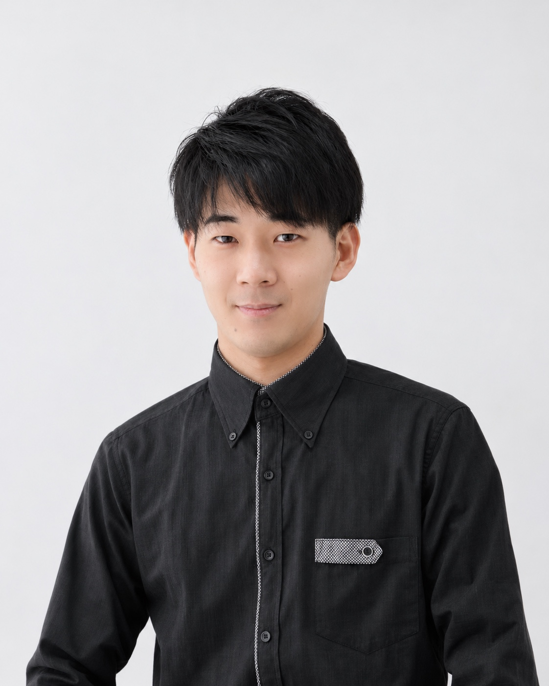

PROFILE / EXECUTIVE COMMITTEE & ACTOR
佐々田 遼斗
SASADA HARUTO
IWAMI ARTS PROJECT 実行委員・俳優

ACTOR / EXECUTIVE COMMITTEE
故郷・石見で、
舞台の表現を続ける。
島根県益田市出身。幼少時からミュージカルなどの公演に参加。大学時代は岡山で過ごし、当地で舞台の経験を積んだ。卒業後は地元に戻り、舞台活動を続けている。
近年の出演は、「若草物語」ローリー役('26)、「幸福の王子」つばめ役('24)、「グレイテストミュージカルコンサート(「レ・ミゼラブル」ハイライト)」マリウス役('23.'24)など。
CAREER / SELECTED WORKS
主な出演歴.
ミュージカル『若草物語』
ローリー役。2026年8月、島根県大田市で上演。
『幸福の王子』
つばめ役として出演。
グレイテストミュージカルコンサート
『レ・ミゼラブル』ハイライトでマリウス役として出演。
岡山での経験、そして故郷へ
岡山で舞台経験を積み、卒業後は島根に戻って舞台活動を続ける。
MORE / RELATED PROJECT
ミュージカル『若草物語』
ローリー役として出演した2026年の公演。上演概要と舞台写真を紹介しています。
竹内 大樹代表 ↗